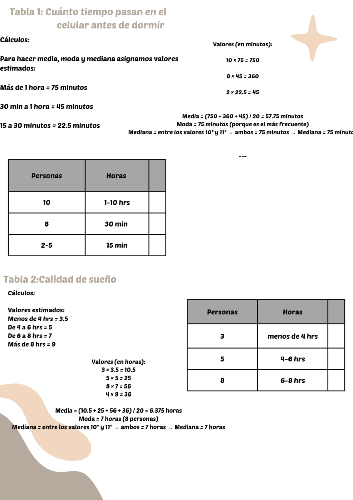
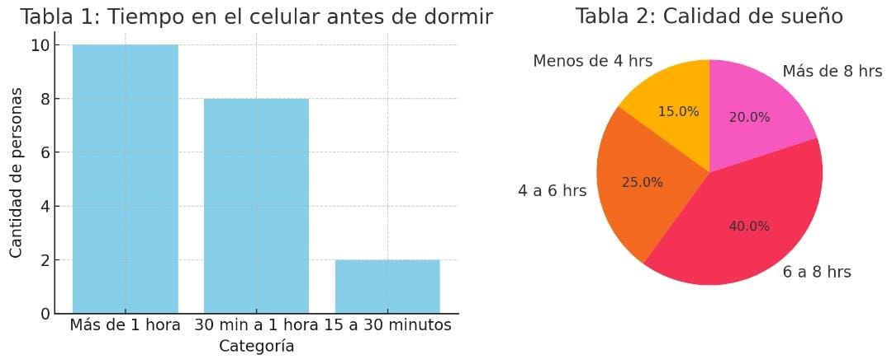

Progresión 7: Herramientas Estadísticas
Propósito: Procesar datos de una situación, fenómeno o problemática investigada mediante herramientas de software que calculen medidas de tendencia central (media, mediana y moda) y de dispersión (desviación estándar y varianza) y su representación gráfica (barras, pastel, líneas, embudo, mapas, diagramas de dispersión, diagramas de Gantt), para contribuir a su análisis.
Contenidos:
- Herramientas estadísticas para procesar datos
- Medidas de tendencia central y dispersión
- Vista general de las gráficas: barras, pastel, líneas, embudo, mapas, dispersión y Gantt
- Ejemplo de aplicación de gráficas adecuadas a su contexto
Situación Analizada
Uso del celular antes de dormir y su relación con la calidad del sueño.
Se aplicó una encuesta a 20 personas para analizar cómo el uso del celular antes de dormir influye en el descanso. A continuación, se presentan las preguntas aplicadas y los resultados obtenidos.
Preguntas de la Encuesta
- ¿Usas el celular antes de dormir?
- ¿Cuánto tiempo lo usas antes de dormir?
- ¿Qué actividades realizas con el celular antes de dormir? (Redes sociales, ver videos, juegos, mensajes, tareas, otro)
- Califica la calidad de tu sueño (1 a 10)
- ¿Cuántas horas duermes?
- ¿Te cuesta dormir después de usar el celular?
- ¿Te sientes cansado al día siguiente?
Resultados
Edad promedio: 15 años
Sexo: 10 mujeres y 10 hombres
1. ¿Usas el celular antes de dormir?
✅ Todos los encuestados respondieron que Sí.
2. ¿Cuánto tiempo lo usas antes de dormir?
- 10 personas: Más de 1 hora
- 8 personas: Entre 30 minutos y 1 hora
- 2 personas: Entre 15 y 30 minutos
3. Actividades antes de dormir
- 14 personas: Juegos
- 4 personas: Redes sociales
- 2 personas: Trabajo o tareas escolares
4. Calidad del sueño (Escala del 1 al 10)
- 8 personas: 8
- 7 personas: 9
- 3 personas: 5
- 2 personas: 10
5. ¿Cuántas horas duermes?
- 8 personas: De 6 a 8 horas
- 3 personas: Menos de 4 horas
- 4 personas: Más de 8 horas
- 5 personas: De 4 a 6 horas
6. ¿Te cuesta dormir después de usar el celular?
- 8 personas: Sí
- 5 personas: No
- 7 personas: A veces
7. ¿Te sientes cansado al día siguiente?
- 4 personas: Sí
- 6 personas: No
- 10 personas: A veces
Gráficas
A continuación se muestran las gráficas obtenidas a partir de los datos:

